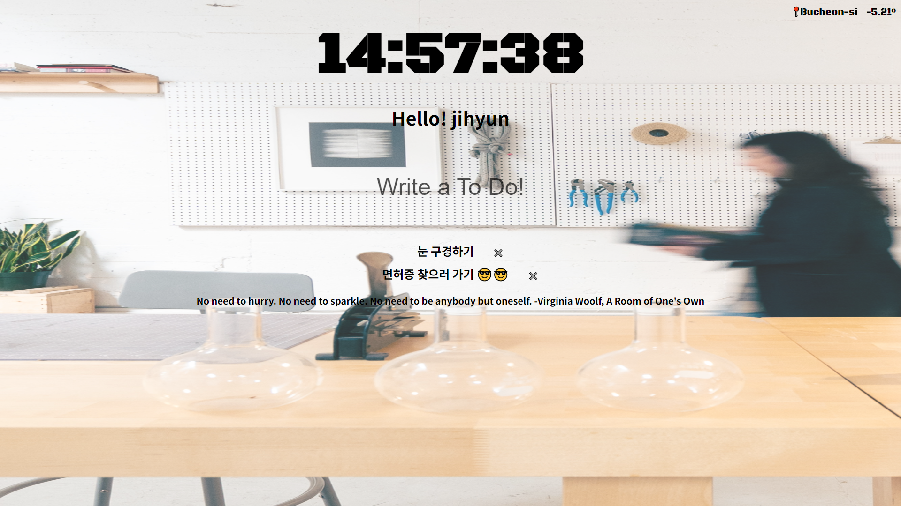

⛄ Weather API Project
📆 TO-DO List Web
https://yzinnie.github.io/JS-Project-TODO/OpenWeatherMap의 API를 사용해 날씨 정보를 알려주는 투두리스트

구현 기능
- Local storage를 활용한 to-do list 입력 및 삭제 기능 / 사용자 이름 저장
- OpenWeatherMap에서 받은 현재 사용자의 city, weather 정보 출력
- 현재 사용자의 시간 출력
- Background image의 랜덤 기능
사용한 기술스택
- Html, Css, JavaScript
- Git
🧸 my web
나의 정보, 나만의 web
https://yzinnie.github.io/JS-Project-myweb/Vanilla JS Project - 나의 정보 페이지
구현 기능
- Button-active
- img web 구현 What i like-Trip 🏄🏻♀
- 화면 상단이동 아이콘 생성 - Window: scrollTo() method
사용한 기술스택
- Html, Css, JavaScript
- Git